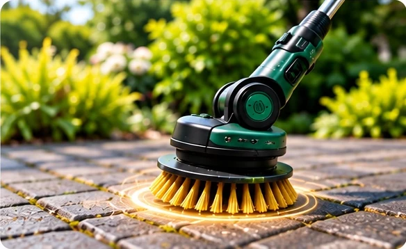
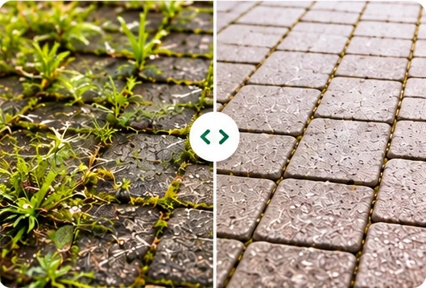
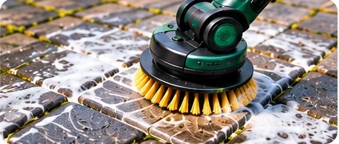
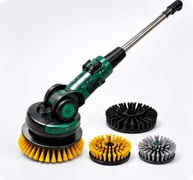
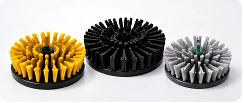
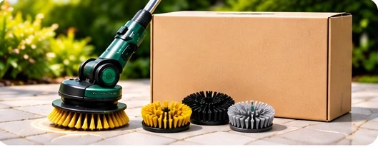
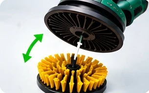
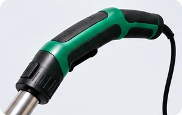

Obrotowa głowica
Koncepcja głowicy wspomagającej czyszczenie nawierzchni.
Poznaj demonstracyjny projekt szczotki elektrycznej do pielęgnacji kostki brukowej, tarasów i otoczenia domu.

Mech, zabrudzenia i osady potrafią zmienić wygląd nawet najpiękniejszego tarasu. Dlatego warto przyjrzeć się rozwiązaniom, które pomagają w codziennej pielęgnacji nawierzchni.

Wizualizacja koncepcyjna przed i po. Rzeczywisty efekt zależy od nawierzchni, rodzaju zabrudzenia i zastosowanego urządzenia.

PRZEDPOGrafika demonstracyjna, nie jest dokumentacją rzeczywistego testu.
Zamiast samych obietnic pokazujemy urządzenie i jego zastosowanie. Docelowo w tym miejscu znajdzie się prawdziwy film z testów produktu.
Poznaj konstrukcję ↗
Podgląd sekcji wideo · film nie został jeszcze dodany
Elementy koncepcji produktu, które zweryfikujemy po wyborze konkretnego modelu.
Koncepcja głowicy wspomagającej czyszczenie nawierzchni.
Możliwość dopasowania akcesoriów do rodzaju pracy — zależnie od modelu.
Forma zaprojektowana z myślą o wygodnym prowadzeniu urządzenia.
Koncepcja dostosowania długości narzędzia do użytkownika.
Produkt przedstawiony w otoczeniu tarasów i nawierzchni brukowanych.
Prezentacja potencjalnych akcesoriów w jednym komplecie.
Zdjęcia demonstracyjne przedstawiają projekt urządzenia i proponowane akcesoria.







Wybierz akcesorium odpowiednie do planowanej pracy, zgodnie z instrukcją konkretnego modelu.
Sprawdź rodzaj nawierzchni i zalecenia producenta przed rozpoczęciem pracy.
Pracuj stopniowo i oceniaj efekt na niewielkim fragmencie powierzchni.
Rzetelne odpowiedzi bez obietnic, których nie potwierdziliśmy testami.
Przedstawiona strona jest projektem demonstracyjnym. Skuteczność usuwania mchu wymaga testów wybranego modelu na rzeczywistej nawierzchni.
Nie można tego zagwarantować bez danych producenta. Przed użyciem należy sprawdzić zgodność z nawierzchnią i wykonać próbę w mało widocznym miejscu.
Grafiki pokazują przykładowy zestaw. Ostateczną zawartość opakowania ustalimy po wyborze produktu i dostawcy.
Specyfikacja techniczna nie jest jeszcze potwierdzona. Nie publikujemy fikcyjnych wartości mocy, czasu pracy ani wydajności.
Nie. To demonstracyjna wersja sklepu. Zamówienia, płatności i dostawy nie są obecnie realizowane.
Warunki zostaną opublikowane przed uruchomieniem sprzedaży, zgodnie z obowiązującymi przepisami i rzeczywistymi możliwościami logistycznymi.
CleanPro – koncepcja urządzenia do pielęgnacji nawierzchni wokół domu.